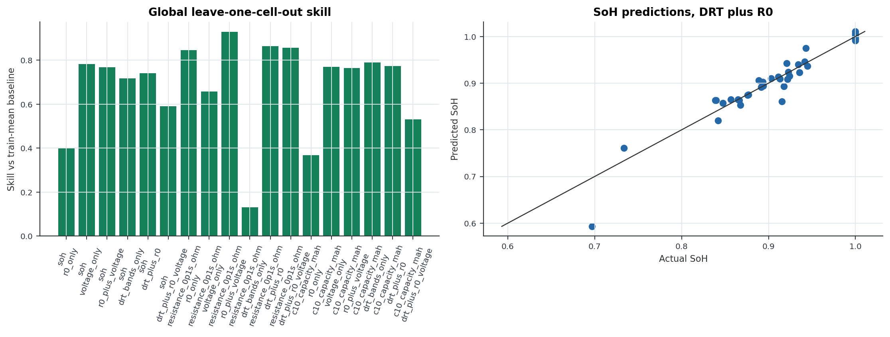

LG M50T 21700 Expt 4 drive-cycle aging Time-Series DRT Pipeline, time-series 2D DRT surface
Purpose
This section tests whether the fitted GITT features survive a simple held-out-cell check. The model is deliberately small ridge regression. A fancier model on 40 rows would be noise cosplay.
Outputs
section_9_held_out_cell_predictions.csv
section_9_held_out_cell_metrics.csv
section_9_drt_incremental_value.csv
section_9_held_out_cell_validation_summary.json
section_9_held_out_cell_validation.png
Results
- Input rows: 40
- Prediction rows: 990
- Metric rows: 27
- Incremental-value rows: 9
- DRT over R0+voltage positive rows: 0
Best Skill Rows
- global / resistance_0p1s_ohm / r0_plus_voltage: MAE 0.000132, baseline MAE 0.001851, skill 0.929
- within_temperature / resistance_0p1s_ohm / r0_plus_voltage: MAE 0.0001744, baseline MAE 0.002057, skill 0.915
- within_temperature / resistance_0p1s_ohm / r0_only: MAE 0.0002611, baseline MAE 0.002057, skill 0.873
- global / resistance_0p1s_ohm / drt_plus_r0: MAE 0.0002526, baseline MAE 0.001851, skill 0.864
- global / resistance_0p1s_ohm / drt_plus_r0_voltage: MAE 0.0002663, baseline MAE 0.001851, skill 0.856
- global / resistance_0p1s_ohm / r0_only: MAE 0.000284, baseline MAE 0.001851, skill 0.847
- within_temperature / resistance_0p1s_ohm / voltage_only: MAE 0.0003748, baseline MAE 0.002057, skill 0.818
- within_temperature / c10_capacity_mah / voltage_only: MAE 50.94, baseline MAE 277.3, skill 0.816
DRT Incremental Value
- global / soh: MAE delta -0.008738, skill delta -0.177, augmented better=False
- global / resistance_0p1s_ohm: MAE delta -0.0001343, skill delta -0.0726, augmented better=False
- global / c10_capacity_mah: MAE delta -56.83, skill delta -0.234, augmented better=False
Interpretation
Positive skill means the feature set beat a train-mean baseline. Negative skill means it made things worse. This is the closest honest replacement for DIB EIS validation in Expt4. It validates health-feature usefulness, not DRT physics. If global validation works but within-temperature validation collapses, the model is mostly learning temperature grouping. Do not hide that. If DRT bands do not improve over R0 plus simple voltage features, they are not ready to justify a larger model.
Linked Graph
